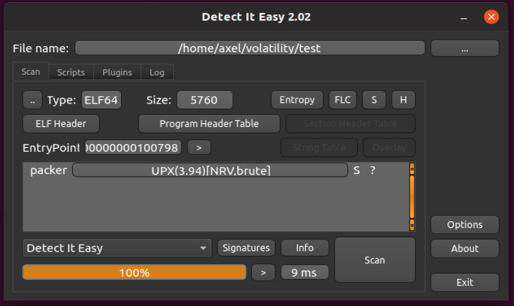
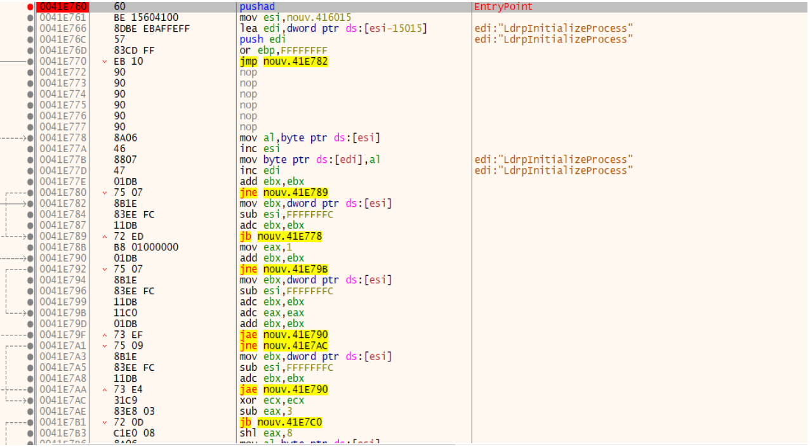
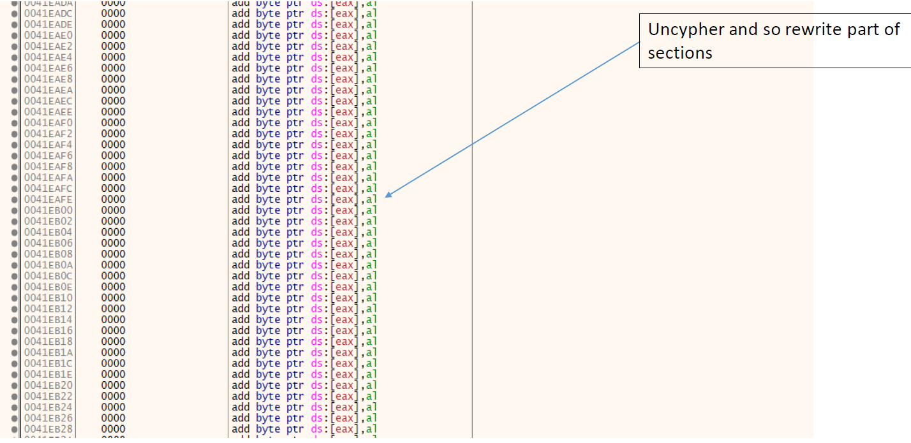
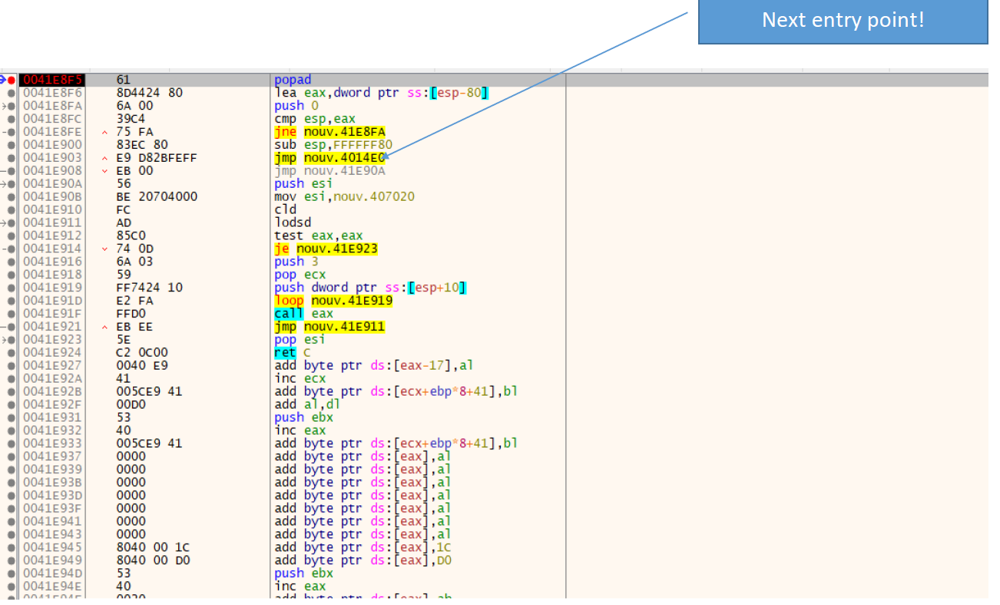
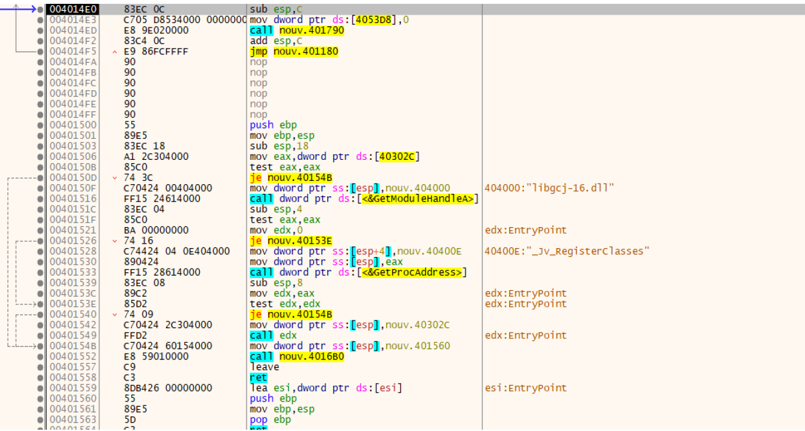

More on packing¶
Why packing?¶
To compress a file and reduce its size but also to obfuscate a file.
- Well known packers:
UPX, THEMIDA, … (can be combined - Warning: Algorithms may vary with architecture (32 or 64 bits)
How to know if my file is packed¶
PEorELFfile with unclassic sections- Few dynamic links
Unpacked
Packed
Packing: challenges¶
Difficulties with packing:
- To identify which packer has been used
- To unpack the file
Solutions:
- PIED, OLLYDBG, YARA rules , detect it easy (DIE), machine learning
- Call the packer itself , or disassemble if the functionality does not exists
Detect it easy (DIE)¶
DIE is based on Yara!
Unpacking: get back original binary¶
When you execute the packed file, you’ll reveal the true behavior of
your file at dynamic level but this does not mean that you’ll get back
the original code, i.e., you cannot do any type of static analysis.
To get back the original binary code you need to unpack the file and
dump the memory at the right moment.
- Right moment
 when the cypher process has been reversed .
when the cypher process has been reversed .
UPX: what is it ?¶
UPXuses a data compression algorithm calledUCLUPX(since 2.90 beta) can useLZMA(data compression based on Markov Chains) on most platforms; however, this is disabled by default for 16 bit due to slow decompression speed on older computers (use lzma to force it on)- Starting with version 3.91,
UPXalso supports 64 Bit (x64) executable files on the Windows platform. This feature is currently declared as experimental
Execution of UPX packed file¶
Assume a 32 bits architecture
There is a clear pattern to the unpacker code section:
- Push all the registers with
pushad - Unpacks the code in physical memory (Lots of rewritting of sections)
- Pop back all registers using
popad - Jump to unpacked code
- Run it!
Unpacking UPX is relatively easy
- Put a break point after
popad - Follow the next jump
- Dump starting from jump destination (it become new entry point address)
- Restore import table with respect to new entry point address
Important observation:
- this requires to disassemble the file!
Illustration¶
   Important observation:
- this requires to disassemble the file!
pushadandpopaddo not exist on 64bit architectures. But one can still check for double 0 repetitions
Unpacking tricks¶
- Put breakpoints at the end of loops: At this point try to re analyze the binary for new assembly routines
- Look for calls that don’t return or jumps with no code after them
- Look for long jumps that jump into a different section: These can indicate a jump from the unpacking stub and the binary itself
- Look for
pushad. Sent a memory breakpoint on these stack addresses, which should break on the correspondingpopad. These are often used to save the context for main. - Add breakpoints on
GetVersionorGetCommandLineA: These are often called from the normal main wrapper that windows compilers addGetModuleHandlefor GUI apps - Some more advanced unpacker only unpack ‘on demand’, meaning that the whole binary is never fully unpacked unless you touch all functionality. This can usually be avoided by scripting your debugger to call the appropriate unpacking routines
Conclusion¶
- Memory dump and memory forensics can be used in many situations
- Dynamic analysis sometimes ) can go further than static analysis
- But dynamic analysis can also easily be bypassed
- Indeed, malware can detect if they’re in a virtualized environment
- Solution: let us do some research and take the best of boths